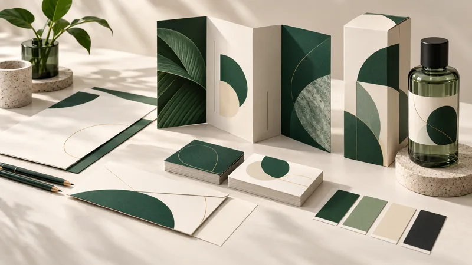

Graphic Design Blog: Tamil Nadu, Districts & US Guides
Practical answers about hiring a designer online, branding, printing, packaging and design files. Our physical studio is in Madurai, India; we offer remote digital design services.

USA · Featured articleGraphic Designer in USA | Sai Graphic Designs
Explore remote branding, logo design, business cards and packaging services for US clients from Sai Graphic Designs.
Read the article →Featured guide
USA · Remote designHow to Hire a Graphic Designer Online for Your US Business
Prepare a clear brief, compare quotes, plan revisions across time zones and agree on the final design files.
Read the guide →Tamil Nadu & District Design Blogs
Tamil Nadu · Designer selection
Graphic Designer in Tamil Nadu: How to Choose
Compare portfolios, project scope, language support and final files before choosing a design partner.
Read the statewide guide →38 districts · Separate articlesFind your Tamil Nadu district blog
Distinct project examples, proofing checkpoints and FAQs for businesses in every district.
Browse all district blogs →More articles
Loading articles…